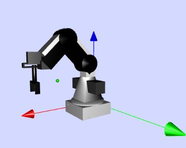

LABORATORIO REMOTO - DOBOT Magician

El DOBOT Magician es un brazo robótico multifuncional de escritorio para la educación de formación práctica. Realiza distintas funciones como son la impresión 3D, el grabado láser, la escritura y dibujo, según el efector final instalado. Admite el desarrollo secundario mediante 13 interfaces extensibles y más de 20 lenguajes de programación , que aumentan sus posibilidades de funcionamiento. También permite la conectividad con diferentes microcontroladores y Arduino o redes inalámbricas (Bluetooth, Wifi). La gran ventaja de este brazo robótico es su bajo coste, pequeño tamaño y facilidad de operación, lo que permite al estudiante el desarrollo de prácticas de manera independiente.
Desde un punto de vista más técnico, el brazo robótico DOBOT Magician, cuenta con cuatro articulaciones de revolución (J1, J2, J3 y J4) y, en el caso de que se instale un efector final, lo componen los siguientes elementos, una base, un brazo trasero, un antebrazo, y un efector final (base, hombro, codo y roll).En relación con las especificaciones de interés sobre el robot, el rango de movimiento de cada articulación está determinado por los valores que se recogen en la Tabla 1, a continuación.
Tabla 1: Rango de movimiento de las articulaciones.
|
Rango de Movimiento de las articulaciones |
|
|
J1 (Base) |
-90º a +90º |
|
J2 (Brazo trasero) |
0º a 85º |
|
J3 (Antebrazo) |
-10º a +90º |
|
J4 (Efector final) |
-90º a +90º |
Además, tiene dos tipos de sistemas de coordenadas, el de las articulaciones y el cartesiano. El primero se basa en el movimiento de las articulaciones, cuyas direcciones positivas son en sentido antihorario. El segundo caso, las coordenadas están determinadas por la base, siendo el origen de los tres motores.
La simulación en JavaScript del DOBOT permite controlar el brazo robótico real de laboratorio en dos espacios: el articular y el cartesiano. Con la primera opción, el usuario controla los ángulos de las articulaciones y, con la segunda, el usuario controla la posición del efector final en los ejes cartesianos {X, Y, Z}. También se proporciona la opción de visualizar el DOBOT real, en lugar de la simulación, a través de la imagen que capta una cámara web situada en el laboratorio. En la parte superior derecha se muestran dos gráficas en las que se representa la posición en los dos sistemas de coordenadas en función del tiempo.
Debido al rango de movimiento de las articulaciones el robot podrá moverse únicamente dentro de un espacio de trabajo permitido que, cuando éste se sobrepase, se muestran avisos que advierten al usuario de que esto ocurre.
En la parte inferior se muestra el panel de control, que puede utilizarse para solicitar movimientos del DOBOT tanto en el sistema cartesiano, correspondientes a la posición del efector final en el espacio de trabajo, como en el sistema articular correspondientes a los ángulos en grados de las articulaciones. La simulación inicialmente se encuentra en el espacio articular y podrá cambiarse al espacio cartesiano marcando la casilla de "Coordenadas Cartesianas". De igual forma, podrá pasarse nuevamente al espacio artciular marcando la casilla "Coordenadas Articulares", siempre y cuando no se muestren avisos de advertencia debajo de la simulación.
Los movimientos del robot en ambos sistemas de coordenadas, a su vez, pueden definirse de dos formas: como movimientos incrementales (modo jogging), al interactuar con los botones de las flechas (XYZ+Roll y J1-J4), o a partir de un punto destino definido (modo PTP) al especificar un punto final en los campos numéricos correspondientes en la parte inferior de cada panel de Coordenadas.
A la derecha se muestra el panel de selección del modo de movimiento (movimientos lineales MOVL, movimientos articulares MOVJ, o articulares con una distancia de aproximación y de despegue JUMP), el botón para establecer la posición cero (HOME) del robot (0º, 45º, 45º, 0º), el botón de parada forzosa (STOP), y el de control del efector final en este caso es la pinza (gripper).
En la parte inferior del panel de control aparecen los elementos de control y acceso del laboratorio remoto para iniciar la experiencia.